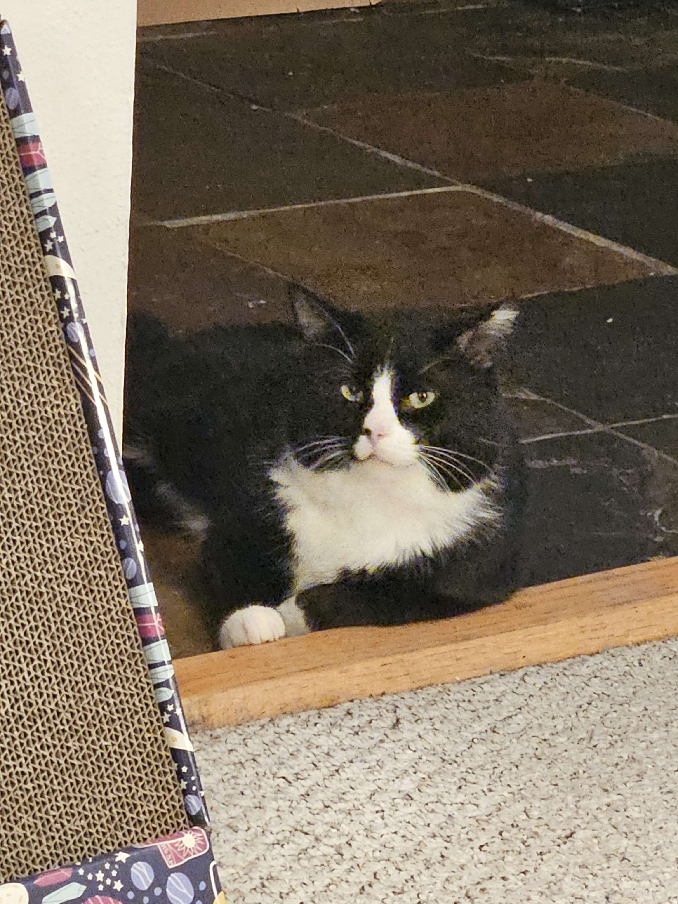
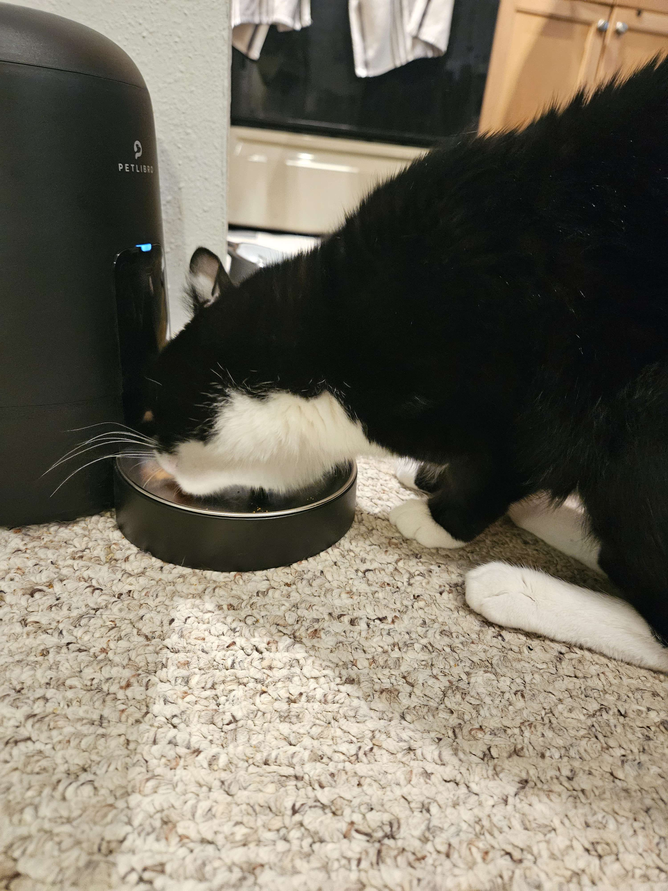

Chad's Bio
Chad is a two year old black and white tuxedo cat who was adopted during pet adoption week 2023 from the Dumb Friends League in Denver Colorado. Since Chad's actual birthday is unknown, we have decided his birthday is going to be his adoption day of March 7th. Chad was neutered later in life compared to most cats, resulting in a thick neck and wide tomcat cheeks. He is very affectionate and loves taking naps in laps while receiving pets and chin scratches. Like most pets, he is a very food driven animal. Below we will list some of Chad's favorite foods as well as provide a table of his feeding schedule.
List of Some of the Brands of Food that Chad Enjoys
Chad enjoys a varied diet of both wet and dry cat foods. Below is a list of some of the types he enjoyes in no particular order:
- Hill's Science Diet Adult (dry)
- Sheba Cuts (wet)
- Reveal (wet)
- Earthborn (wet)
- Taste of the Wild (wet)
List of Chad's favorite snacks
Chad also enjoys having the occasional snack inbetween feedings. Below is an ordered list of his favorite snacks:
- Fancy Feast Savory Cravings Cat Chocolates
- Sheba Meaty Tender Sticks
- Temptations Mix Ups
- Sentry Calming Chews
- Greenies Dental Treats
- Hartz Hairball Plus Soft Chews
Chad's Feeding Schedule
Chad is fed dry food with an automatic feeder twice a day, as well as wet food manually by his owners twice a day. We found that more frequent feedings with lower portions reduced Chad's irritability as well as improved his energy levels throughout the day. The automatic feeder also allows us to be more consistant with Chad's feedings without it affecting our work and sleep schedules. Below is a table of Chad's feeding schedule:
| 5:30am Feeding (automatic) | 9:00am Feeding (manaual) | 5:00pm Feeding (automatic) | 7:30pm Feeding (manual) |
|---|---|---|---|
| 1/4 cup of Hill's Science dry food | 1 Serving tray of Sheba Cuts wet food | 1/4 cup of Hill's Science dry food | 1 Serving of Sheba/Reveal/Earthborn/Taste of the Wild |